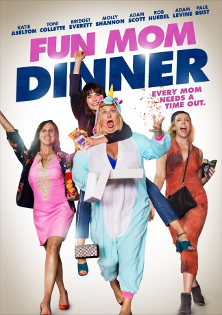

gesehen am 23.11.2017
gesehen am 23.11.2017Alternativ: Fun Mom Dinner gesehen am 23.11.2017
 
 IMDB-Wertung: 5.1 / 10
IMDB-Wertung: 5.1 / 10  Metascore:
Metascore: 
Four moms whose only common ground is their kids' preschool class, decide to get together for a harmless "fun mom dinner."
Jahr: 2017
Dauer: 81 Minuten
FSK: 0
Land: USA Studio: Momentum PicturesTonspuren: DTS - ,
Untertitel: Deutsch, Englisch,
Auflösung: 1080p (1920x800) Größe: 6154 MB
Genre: Komödie
Regisseur: Alethea Jones
Drehbuch: Julie Rudd
Soundtrack:
Darsteller:
 Rob Huebel als Andrew
Rob Huebel als Andrew Toni Collette als Kate
Toni Collette als Kate Owen Vaccaro als Lucas
Owen Vaccaro als Lucas Molly Shannon als Jamie
Molly Shannon als Jamie Katie Aselton als Emily
Katie Aselton als Emily Jessica Chaffin als Jen
Jessica Chaffin als Jen Claudia O'Doherty als Teacher Sherry
Claudia O'Doherty als Teacher Sherry Jessie Ennis als Francesca
Jessie Ennis als Francesca Adam Scott als Tom
Adam Scott als Tom David Wain als Wayne
David Wain als Wayne Paul Rudd als Brady
Paul Rudd als Brady Adam Levine als Luke
Adam Levine als Luke John Early als Alfred
John Early als Alfred Sam Lerner als Alex
Sam Lerner als AlexDatei: X:\2017(A-F)\Anpassen Fun Mom Dinner - Jede Mom braucht mal eine Auszeit (2017, FSK0, 1920x800).mkv seit 20.11.2017
Festplatte: HD 2017(A-Z)-2018(A-F)
 Es gibt insgesamt 152 Filme in der Gruppe '2017(A-F)'
Es gibt insgesamt 152 Filme in der Gruppe '2017(A-F)'